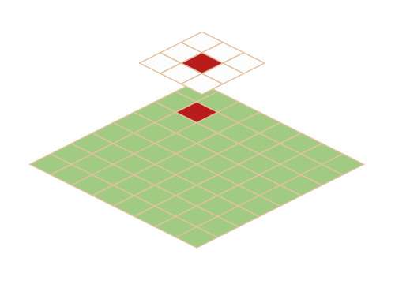

Visualisierung von Höhendaten
Die Abbildung bzw. Visualisierung von Höhendaten ist aus vielfältigen Gründen sinnvoll und entscheidend für das Verständnis und die Analyse unserer Umwelt.
Wesentliche Gründe dafür sind:
- Verständnis des Geländes: Durch die Visualisierung werden Höhenunterschiede, Geländeformen wie Hügel, Täler und Gebirgskämme sowie die
allgemeine Topographie eines Gebiets veranschaulicht und verständlicher gemacht. Dies hilft, die physischen Eigenschaften der Landschaft sowie ihre
Entstehung und Formgebung zu erfassen.
- Vereinfachung komplexer Daten: Rohdaten von Höhenmessungen, wie Punktwolken, können überwältigend und schwer zu interpretieren sein.
Visualisierungen, wie z. B. digitale Höhenmodelle, digitale Oberflächenmodelle oder digitale Geländemodelle, sowie traditionelle Methoden wie Höhenlinien
(Konturlinien), machen diese komplexen Informationen zugänglich und ermöglichen es, sie sofort zu erfassen.
- Unterstützung bei Analysen: Visualisierte Höhendaten sind die Grundlage für verschiedene geografische Analysen. Sie ermöglichen die
Geländeanalyse, die Identifizierung von Mustern und Trends und die Berechnung von Oberflächeneigenschaften.
- Breite Anwendungspalette: Die Visualisierung ist entscheidend für zahlreiche praktische Anwendungen und Entscheidungsprozesse in
verschiedenen Bereichen wie Hydrologie, Infrastruktur- und Verkehrsplanung, Stadt- und Regionalplanung, Umweltmanagement, Katastrophenmanagement,
Ressourcenmanagement, Kartographie und Bildverarbeitung, Geologie und Geomorphologie und Archäologie.
Zusammenfassend lässt sich sagen, dass die Visualisierung von Höhendaten unerlässlich ist, um die Erdoberfläche zu verstehen, komplexe räumliche Analysen
durchzuführen, fundierte Entscheidungen in Planung und Management zu treffen und Informationen effektiv zu kommunizieren.
3x3-Meter-Fenster
Bei der Analyse von digitalen Geländemodellen (DGM), wie dem DGM1 mit einer Gitterweite von einem Meter, ist das 3x3-Meter-Fenster eine grundlegende Methode
zur Berechnung verschiedener topographischer Indizes. Diese auch als "Kernel" oder "Fokus-Filter" bezeichnete Strategie analysiert für jeden Messwert des
Geländemodells dessen direkte Nachbarschaft, um lokale geomorphologische Eigenschaften zu quantifizieren.
Das 3x3-Fenster besteht aus einem zentralen Messwert und seinen acht unmittelbaren Nachbarn. Dieses Fenster verschiebt sich Zelle für Zelle über das gesamte
Raster des DGM. Für jede Position wird aus den neun Höhenwerten innerhalb des Fensters ein neuer Wert für den zentralen Messwert berechnet, der dann in einer
neuen Rasterdatei für den jeweiligen Index gespeichert wird. Das Ergebnis hängt von der spezifischen Berechnungsmethode des Indexes ab.

Skizze des sich verschiebenden 3x3-Meter-Fensters.
Zusammenfassend lässt sich sagen, dass die 3x3-Meter-Fenster-Strategie eine fundamentale Technik der digitalen Reliefanalyse ist, die es ermöglicht, aus
reinen Höhendaten aussagekräftige, abgeleitete Informationen über die Morphologie des Geländes zu gewinnen.
(Gradienten-) Algorithmen
Es stehen zwei Algorithmen zur Berechnung der Geländeschattierung zur Verfügung: Horn und Zevenbergen-Thorne. Der Hauptunterschied zwischen ihnen liegt in
der Art und Weise, wie sie die lokalen Steigungs- und Ausrichtungsderivate (Gradienten) aus den Höhendaten (DGM) berechnen und für welche Landschaftstypen sie
jeweils optimal geeignet sind.
1. Zevenbergen-Thorne-Algorithmus
- Charakteristik: Dieser Algorithmus ist mathematisch präziser und verwendet eine Methode, die besonders gut für glatte oder sanfte
Landschaften geeignet ist. Er neigt dazu, die Daten zu glätten, da er weniger Datenpunkte (oft nur vier direkte Nachbarzellen) zur Berechnung verwendet.
-
Optimal für Landschaftstypen:
- Glattes, sanftes Gelände: Ideal für Gebiete mit geringen Höhenunterschieden, wie Flachland, sanfte Hügel oder Plateaus, bei denen
eine detaillierte, aber nicht übertriebene Darstellung feiner Geländeformen gewünscht ist.
- Hochauflösende DGMs auf glatten Oberflächen: Bei sehr detaillierten Höhenmodellen von glatten Oberflächen kann der
Zevenbergen-Thorne-Algorithmus präzisere Ergebnisse liefern, da er kleinere Variationen nicht überbetont.
2. Horn-Algorithmus
- Charakteristik: Der Horn-Algorithmus ist eine weit verbreitete Methode, die eine 3x3-Fenster-Matrix verwendet, um lokale Derivate zu
approximieren. Er berücksichtigt alle acht Nachbarzellen zur Berechnung von Steigung und Ausrichtung. Er wird oft als Standardalgorithmus in vielen
GIS-Anwendungen verwendet.
-
Optimal für Landschaftstypen:
- Raues, zerklüftetes Gelände: Dieser Algorithmus ist besser für Gebiete mit großen und abrupten Höhenunterschieden geeignet, wie
Gebirge, Schluchten oder stark erodierte Landschaften.
- Gelände mit hoher Variabilität der Hangneigung: Der Horn-Algorithmus betont Täler, Grate, Gipfel, Senken und Kuppen stärker, was ihn
ideal für die Visualisierung komplexer topografischer Merkmale macht.
Zusammenfassend lässt sich sagen, dass die Wahl des Algorithmus davon abhängt, welche Art von Geländemerkmalen hervorgehoben werden soll. Für eine möglichst
realistische Darstellung ist es ratsam, den Algorithmus zu wählen, der am besten zum Charakter der Landschaft passt.